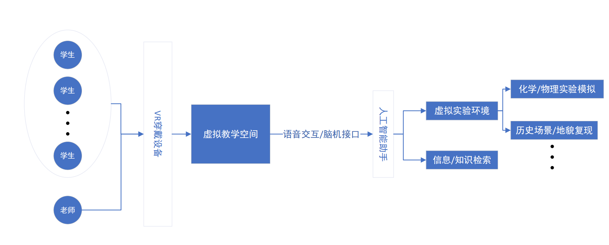
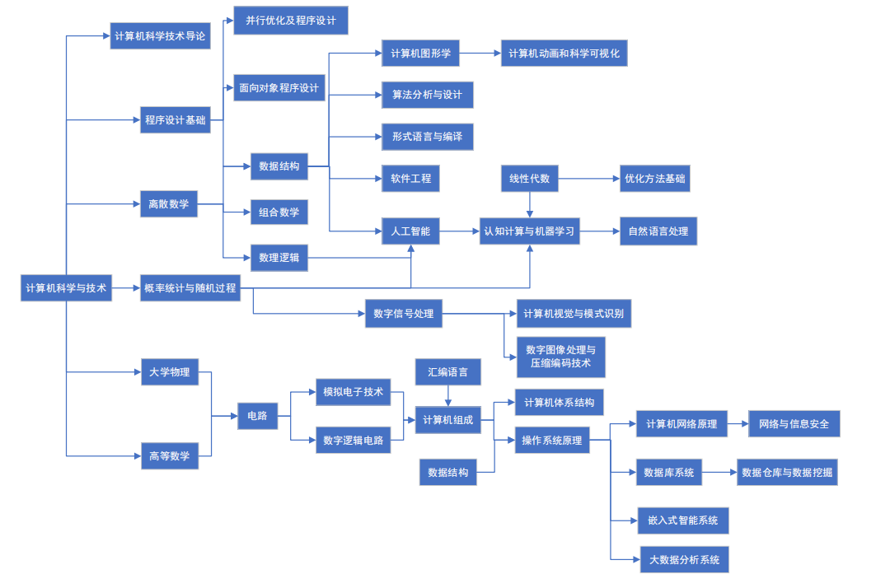

一、请畅想人工智能、大数据、云计算、区块链、移动互联网等技术，对未来教育的重大影响，思考和回答以下问题（30分）
1.请结合你自己在在线教育的实际应用经历，分析当前在线教育存在的不足
我认为目前在线教育主要存在以下几个问题：
第一，相关工具、软件缺失。结合我线上教育的经历，大部分老师采取的软件都是腾讯会议或者雨课堂，前者并不是为线上教育而设计，缺少很多针对性的功能，而后者虽然有一定教学功能，但是体验感很差，不少同学都反应效果不好。
第二，学生和老师之间的信息传递很困难，且很单一。与传统的面对面的线下教学相比，线上教学的交互反馈机制及其单一，虽然也有视频这种方式，但是大部分人在上线上课的时候都选择关闭摄像头，闭麦不和老师交流，或者仅仅通过文字交流。这种带来的最大的弊端就是老师得不到及时的反馈，只能一口气一直往下讲，讲课的效果大打折扣。
第三，由于学生所处环境各异，学生很容易受到环境干扰。比如早上的课直接在床上躺着上，很容易又睡过去，导致学习效率低下。
2.设想未来智能化课堂教学的场景，新的功能和交互方式，用示意图表达你的设想
我认为所谓智能化，就是要在最大程度上模拟真实的体验感，并且在这个过程中把一些低级的，重复的，繁琐的事情简单化，自动化。所以未来智能化课堂教学应该会是类似于虚拟教学课堂的模式，学生老师通过VR设备进入虚拟的教学课堂，同老师进行面对面的交互，以此模仿最真实的课堂体验，并且可以在虚拟的教学环境中进行各种实验，实践，考察一类的活动，省时省力，并且加入人工智能助手，辅助教学工作。
3.设想大数据分析怎样实现个性画像，进而支持学习内容的个性化推荐
我认为大数据分析建立个性画像主要分为以下几个步骤：
首先，通过对原始数据的分析得到事实标签，也就是通过分析你平时的搜索记录，购物记录等一切行为，统计出一份事实标签的表单。比如你频繁的上网搜索汽车相关的信息，就会给你打上类似于‘车迷’这样的标签。拿到事实标签后，接下来应该是分析这些标签，从而对你建立一个立体的、全面的人物模型，比如你的职业、爱好、年龄、收入等等。到这一步，你的基本人物画像就建立好了。
接下来就是基于大数据技术，根据你的人物模型进行相应的预测。比如你的标签可能有30岁，车迷，通过大数据分析发现30岁的车迷比较喜欢电脑，就会给你打上‘喜欢电脑’这样的预测标签，从而可以对你进行一些个性化的推荐。这既是大数据技术最关键的一点，忽略因果关系，更注重关联性。你可能会好奇为什么30岁的车迷会更喜欢电脑，但是这对于商家来说并不重要，大数据显示确实是这样。学习内容的个性化推荐和这个是一个道理，根据你个人的学习模型，再通过大数据的分析，对你生成一个学习的预测模型，从而对你进行相关学习内容的推荐，以此达到个性化推荐的效果。
4.设想人工智能怎样作为虚拟助教或导师
我认为人工智能相比于人类，主要的优势体现在人工智能收集信息的范围很全面，并且处理数据的速度很快。基于此，我认为人工智能能够作为一个辅助工具辅助人类导师管理学生。人工智能可以通过大规模且全面的收集数据，对学生建立模型，并且通过大数据技术、深度学习等预测学生的状态变化等信息，从而及时的反馈给人类导师或者学生本人，以便对学生进行更好的管理引导。比如人工智能可能可以通过对学生信息的分析，得到学生的大概时间分配表，在学生时间分配表发生大的改变的时候及时进行反馈，以防后续更多更严重问题的出现。
5.计算机学科关系图
6.参考资料
7.对计算机专业认识
我认为计算机专业有以下几个特点：
首先，计算机专业包含的内容非常的多，有各种各样的技术方向，想要全部掌握是不可能的，我们应该选定一个方向，在这个方向上一步一步深入学习，但是别的技术方向，我们也应该有一定涉猎，了解大概的原理，这样才能做到融会贯通。
其次，计算机专业的技术更迭的速度非常的快，从ENIAC问世到今天，也不过才短短70多年，但是计算机技术已经有了翻天覆地的变化。我们作为计算机专业的学生，一定要注意不断的提升自己，跟上时代发展的脚步，否则就会被淘汰。
第三，计算机技术为人类作出了突出的贡献。计算机的问世为人类解决了很多的技术难题，现在计算机技术已经深入人类社会的各个领域，可以预见在未来，计算机将继续繁荣发展，为人类做出更多贡献。
最后，计算机技术已经成为国家之间竞争的中坚技术，一个国家计算机技术实力的好坏至关重要。计算机技术的快速发展也带来了巨大的人才缺口，我们应该努力学习，投身于中国计算机产业的建设中。
8.大学学业规划